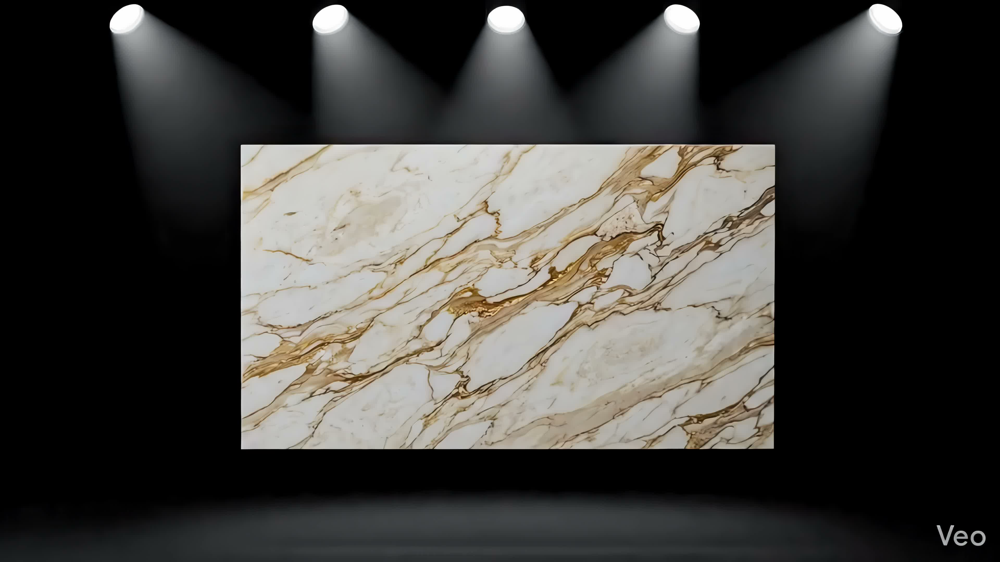
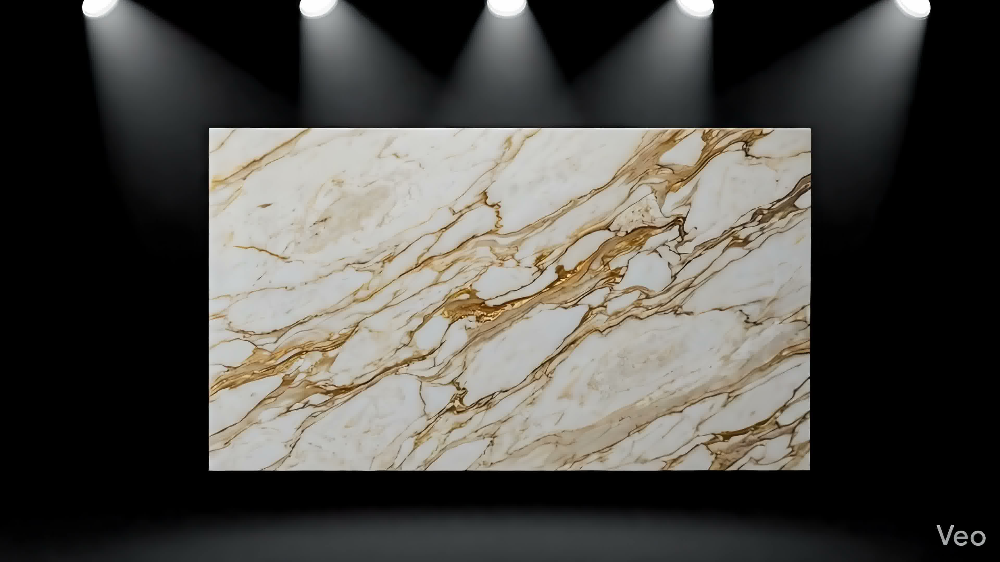

Sofisticação e Contraste
Originário da região de Markina, no País Basco espanhol, o Mármore Nero Marquina é uma rocha calcária muito aclamada no design contemporâneo por seu forte impacto visual. O contraste marcante entre o fundo negro denso e os veios brancos e finos confere uma atmosfera dramática e luxuosa a qualquer espaço.
Muito utilizado por designers de interiores que buscam fugir do comum, ele cria superfícies reflexivas incríveis quando polido. Seus veios contêm vestígios de fósseis marinhos fossilizados que agregam uma história geológica única à rocha.
Aplicações Recomendadas
Por ser uma pedra escura de textura compacta, o Nero Marquina sobressai em ambientes secos e áreas de destaque decorativas:
- Revestimentos de paredes internas e painéis de TV
- Tampos de lavabos esculpidos sob medida
- Detalhes decorativos e tampos de mesa
- Molduras de lareiras e pisos de baixo tráfego
Ficha Técnica
Projetos Executados em Nero Marquina



Deseja este material no seu projeto?
Fale diretamente com os nossos projetistas no WhatsApp e receba um estudo de paginação e orçamento personalizado para sua obra.
Solicitar Orçamento Grátis